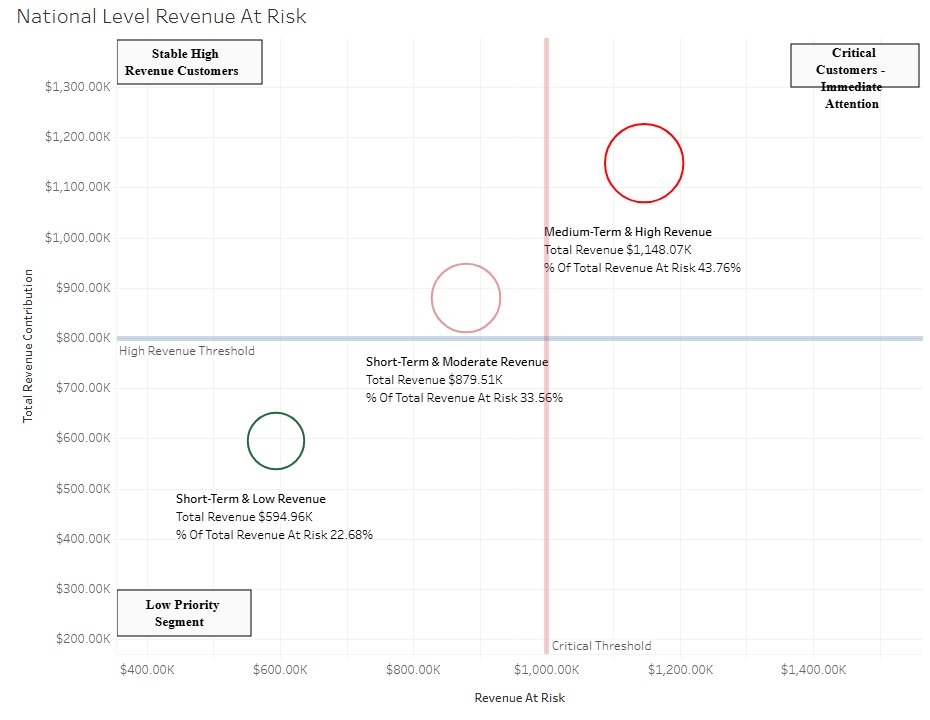

Which customers are about to leave, and what revenue is at stake?
An end-to-end churn pipeline built the honest way: a leakage screen caught a variable that alone predicted churn perfectly, so the model was rebuilt and every customer scored out of fold. The export feeds a live Tableau dashboard with risk tiers and revenue at risk.
0.758out-of-fold ROC-AUC
$95,704modeled monthly revenue at risk
2,000customers scored per run
Modeled on a seeded synthetic sample of 2,000 customers — built so anyone can reproduce the pipeline; full disclosure in the case study.

Live Tableau Public dashboard, captured 2026-07-08